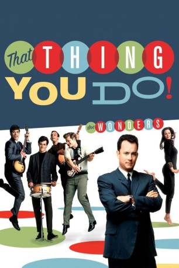

#8387 That Thing You Do!
 
 IMDB-Wertung: 6.9 / 10
IMDB-Wertung: 6.9 / 10  Tomatometer: 93
Tomatometer: 93  Metascore: 0
Metascore: 0 
Mitte der sechziger Jahre landet die Amateur-Pop-Band "The Wonders" völlig überraschend einen Superhit. Über Nacht werden die jungen Leute zu gefeierten Superstars und stehen fortan im Rampenlicht der amerikanischen Öffentlichkeit. Doch Ruhm und Ehre sind vergänglich...
Jahr: 1996
Dauer: 107 Minuten
FSK: 6
Land: USA Studio: Twentieth Century FoxTonspuren:
Untertitel: Deutsch,
Auflösung: 1080p (1920x1040) Größe: 8949 MB
Genre: Drama, Musik, Komödie
Regisseur:  Tom Hanks
Tom Hanks
Drehbuch: Tom Hanks
Soundtrack: Howard Shore
Darsteller:
Datei: X:\1996\That Thing You Do! (1996, FSK6, 1920x1040).mkv seit 28.02.2018
Festplatte: HD 1996-2002
 Es gibt insgesamt 78 Filme in der Gruppe '1996'
Es gibt insgesamt 78 Filme in der Gruppe '1996'